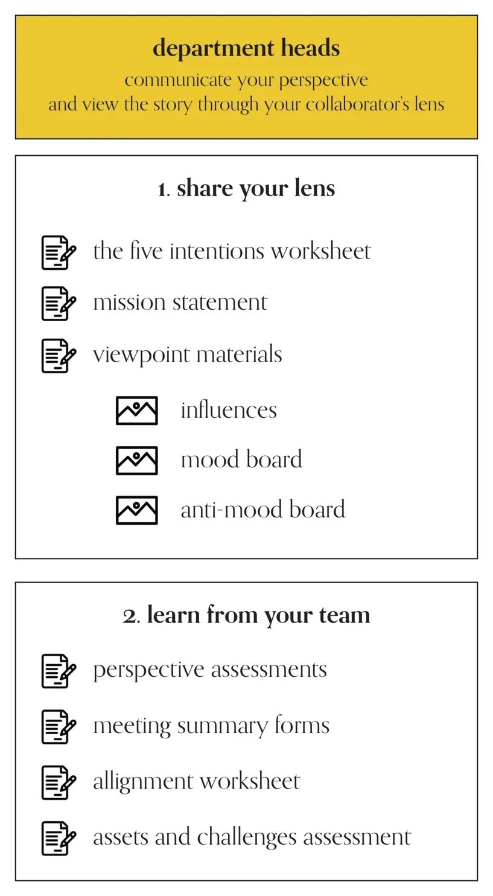
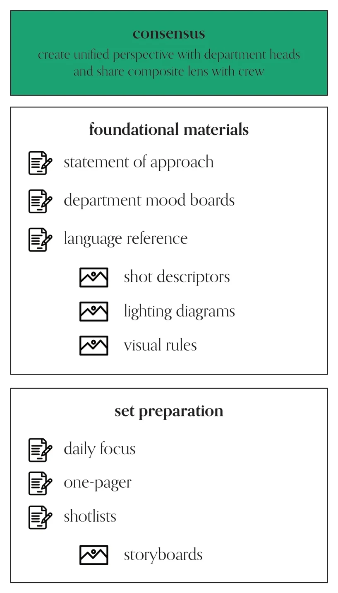

director: become aware of your unconcious perspectives and develop your concious lens
1. connect to yourself: self assessment · intention and application · assets and challenges
2. connect to your material: intuitive assessment · script study
02 · 自我评估02 · Self assessment
1. 连接自己 · 导演1. connect to yourself · DIRECTOR
01
你喜欢看电影的什么？What do you love about watching movies?
02
你的电影要怎样体现这些特质？How will your film embody these qualities?
03
你喜欢拍电影的什么？What do you love about making movies?
04
你的工作流程要怎样放大这些特质？How will your process amplify these qualities?
05
你目前在个人生活里正在经历哪些挑战？What challenges are you currently working through in your personal life?
06
这些挑战让你产生了哪些还没有答案的问题？What unanswered questions do you have as a result of these challenges?
07
你的电影和流程会怎样尝试回答这些问题？How will your film and process attempt to answer these questions?
03 · 优势与挑战03 · Assets and challenges
导演DIRECTOR
01
作为导演，什么对你来说很容易？What comes easily to you as a director?
02
你的工作环境要怎样支持并培养这些优势？How will your working environment support and foster these assets?
03
作为导演，你觉得什么很难？你的挑战在哪里？What do you find difficult as a director? Where do your challenges lie?
04
你的工作环境要怎样缓解这些挑战？How will your working environment mitigate these challenges?
05
拍摄期间，你要怎样找人帮你应对这些挑战？How will you enlist help to address these challenges during production?
06
在片场你最多时间花在解决什么问题上？这个答案和你作为导演的优势与挑战有什么关联？Where do you spend the most time troubleshooting on set? How does this answer correlate to your director’s assets and challenges?
07
你要怎样在前期筹备时建立一套流程来处理这些问题？How will you create a process that addresses these issues during pre-production?
04 · 意图与落地04 · Intention and application
导演DIRECTOR
01
这部电影是拍给谁看的？Who is this film intended for?
02
你的拍摄方式要怎样体现这个意图？How will your filmmaking approach reflect that intention?
03
电影会在哪里发行？Where will the film be released?
04
你的拍摄方式要怎样体现这个意图？How will your filmmaking approach reflect that intention?
05
以上答案对电影预算提出了什么要求？What do the above answers require from the budget for your film?
06
你的流程要怎样把预算考虑进去？How will your process take this budget into account?
07
如果预算和需求有差距，你的流程要怎样化解这个挑战？If there is a disparity between your budget and needs, how will your process mitigate this challenge?
05 · 直觉评估05 · Intuitive assessment
2. 连接你的素材 · 导演2. connect to your material · DIRECTOR
01
这部电影里哪些地方你很容易产生共鸣？What about this film is easy for you to relate to?
02
这部电影里哪些地方让你觉得不合逻辑或不舒服？What about this film feels illogical or uncomfortable to you?
03
想到要拍这部电影，最让你兴奋的是什么？What excites you most about the prospect of making this film?
04
你和主角是什么关系？和反派呢？How do you relate to your protagonist? Your antagonist?
05
这个故事的哪些方面和你自己的生活重叠？What aspects of this story overlap with your own life?
06
想到这部电影时，你脑中最先浮现哪些场景？When you think of the film, what scenes first come to mind?
07
想象一个 7 岁的孩子问你这部电影讲什么，你会怎么告诉他？Imagine a 7-year old asks you what the film is about. What do you tell them?
06 · 剧本研读06 · Script study
导演DIRECTOR
01
片中哪些角色的背景或视角是你不具备的？What characters in the film come from backgrounds or perspectives that you do not share with them?
02
你要怎样更多地了解这些视角？How will you learn more about these perspectives?
03
片中哪些场景你还没有完全理解？Which scenes in the film do you not fully understand?
04
你要怎样加深对它们的理解？How will you deepen your understanding of them?
05
有没有哪个角色做出的决定，你在故事里找不到原因？Do any character’s in the film make decisions that you cannot trace to a cause within the story?
06
如果有，你要怎样找到或创造一个原因？If so, how will you locate or invent a causation?
07
问问自己：有没有哪些场景你是在替它找理由？如果有，你打算怎样处理？Check in with yourself. Are there any scenes you are making justifications for? If so, how will you decide to address them?
07 · 部门主管：总览07 · Department heads: overview

部门主管阶段路线图Department heads roadmap
部门主管：传达你的视角，并透过合作者的“镜头”看故事。
1. 分享你的镜头：五种意图表 · 使命宣言 · 视角材料（影响板 · 情绪板 · 反情绪板）
2. 向团队学习：视角评估 · 会议纪要表 · 对齐表 · 优势与挑战评估
department heads: communicate your perspective and view the story through your collaborator’s lens
1. share your lens: the five intentions worksheet · mission statement · viewpoint materials (influences · mood board · anti-mood board)
2. learn from your team: perspective assessments · meeting summary forms · allignment worksheet · assets and challenges assessment
08 · 五种意图08 · The five intentions
1. 分享你的镜头 · 部门主管。针对下面每个类别回答：观众需要知道这个类别的什么，才能理解它将在故事里呈现的真相？1. share your lens · DEPARTMENT HEADS. For each of the following categories, answer the following question: 1. What does the audience need to know about this category in order to understand the truths it will present in the story?
01
环境Environment
02
情节Plot
03
人物Character
04
情绪Mood
05
主题Theme
09 · 使命宣言09 · Mission statement
部门主管。详细写出你希望观众怎样接收这部电影，以及你打算怎样和团队合作达到这种接收效果。DEPARTMENT HEADS. Detail how you envision this film being recieved by an audience and how you intend to achieve this reception by working with your team.
01
导演的使命宣言Director’s Mission Statement
10 · 影响板10 · Influences
部门主管。做一块情绪板，收集代表你当下生活里所见、所听、所思的图像。它应该像你脑海的视觉呈现，而不是一份讲电影美学的说明文件。允许意识流！DEPARTMENT HEADS. Create a moodboard of images that represent the sights, sounds, and ruminations present in your current experience of life. This should look like a visual representation of your mind, not an instructive document on the aesthetics of your film. Allow for stream of conciousness!
01
影响板Influence Board
11 · 定向情绪板11 · Targeted moodboards
部门主管（对应路线图里的“情绪板 / 反情绪板”）DEPARTMENT HEADS
01
偏离目标（太冷）Off-Target (Too Cold)
02
命中目标（刚刚好）On-Target (Just Right)
03
偏离目标（太热）Off-Target (Too Hot)
12 · 会议纪要表12 · Meeting summary form
2. 向团队学习 · 部门主管2. learn from your team · DEPARTMENT HEADS
01
今天的会议提出了哪些问题？What questions were raised in today’s meeting?
02
今天会议记录下的答案：Answers recorded in today’s meeting:
03
解答剩余问题的行动计划：Plan of action to answer the remaining questions:
04
讨论到的关键日期：Key dates discussed:
05
最后备注：Final notes:
13 · 部门优势与挑战13 · Assets and challenges (team)
部门主管DEPARTMENT HEADS
01
在你的岗位上，什么对你来说很容易？What comes easily to you in your role?
02
我们的工作环境要怎样支持并培养这些优势？How can our working environment support and foster these assets?
03
在你的岗位上，你觉得什么很难？你的挑战在哪里？What do you find difficult in your role? Where do your challenges lie?
04
我们的工作环境要怎样缓解这些挑战？How can our working environment mitigate these challenges?
05
拍摄期间，我们要怎样找人帮忙应对这些挑战？How can we enlist help to address these challenges during production?
06
在片场你最多时间花在解决什么问题上？Where do you spend the most time troubleshooting on set?
07
我们要怎样在前期筹备时建立一套流程来处理这些问题？How can we create a process that addresses these issues during pre-production?
14 · 视角评估14 · Perspective assessment
部门主管DEPARTMENT HEADS
01
这部电影里哪些地方你很容易产生共鸣？What about this film is easy for you to relate to?
02
这部电影里哪些地方让你觉得不合逻辑或不舒服？What about this film feels illogical or uncomfortable to you?
03
想到要拍这部电影，最让你兴奋的是什么？What excites you most about the prospect of making this film?
04
你的部门要怎样支撑这个故事的五种意图？How will your department support the five intentions of this story?
05
我们的使命宣言里哪一点打动了你？What about our mission statement resonates with you?
06
想到这部电影时，你最先想到哪些场景？When you think of the film, which scenes come to mind first?
07
想象一个 7 岁的孩子问你这部电影讲什么，你会怎么告诉他？Imagine a 7-year old asks you what the film is about. What do you tell them?
15 · 对齐表15 · Alignment worksheet
部门主管DEPARTMENT HEADS
01
讨论议题Discussion Topic
02
合作者 1 的视角Collaborator #1’s Perspective
03
合作者 2 的视角Collaborator #2’s Perspective
04
共识 / 综合Consensus / Synthesis
16 · 共识：总览16 · Consensus: overview

共识阶段路线图Consensus roadmap
共识：和部门主管建立统一的视角，并把这个合成的“镜头”分享给全体剧组。
基础材料：方法声明 · 部门情绪板 · 语言参考（镜头描述词 · 布光图 · 视觉规则）
片场准备：每日重点 · 一页纸 · 分镜表（故事板）
consensus: create unified perspective with department heads and share composite lens with crew
foundational materials: statement of approach · department mood boards · language reference (shot descriptors · lighting diagrams · visual rules)
set preparation: daily focus · one-pager · shotlists (storyboards)
17 · 方法声明17 · Statement of approach
1. 基础材料 · 共识。用平实的语言总结你和部门主管完成这部电影要用的创作方法。1. foundational materials · CONSENSUS. Create a plain language summary of the creative approach you and your Department Heads will use to accomplish this film.
01
团队声明Team Statement
02
团队签名Team Signatures
18 · 部门情绪板18 · Department moodboards
共识CONSENSUS
01
主题 1Topic #1
02
主题 2Topic #2
03
主题 3Topic #3
19 · 视觉规则19 · Visual rules
共识。参考团队的方法声明和五种意图，为你的电影建立一套视觉语言。每条规则都勾选它服务的意图：情节 · 环境 · 人物 · 情绪 · 主题。CONSENSUS. Reference your team’s statement of approach and the five intentions to create a visual lanuage for your film. Each rule: PLOT · ENV. · CHAR. · MOOD · THEME.
今天我们要做什么（用平实的语言）？What are we doing today (in plain language)?
02
如果今天只能把一件事做到极好，那件事是什么？If we do one thing excellently today, what will that thing be?
03
今天每个部门最大的挑战是什么？What is each department’s biggest challenge today?
04
我们的工作环境要怎样缓解这些挑战？How will our working environment mitigate these challenges?
05
灵感Inspiration
23 · 场景分析一页纸23 · Scene analysis one-pager
共识。针对下面每个类别回答：1. 这场戏需要传达什么，才能被深刻理解？2. 我要做什么来确保它被传达？CONSENSUS. For each of the following categories, answer the following questions: 1.What does this scene need to communicate in order to be deeply understood? 2. What will I do to ensure this is communicated?
01
环境Environment
02
情节Plot
03
人物Character
04
情绪Mood
05
主题Theme
24 · 导演分镜表24 · Director’s shotlist
共识。表头：今天我们要做什么（用平实的语言）？每行（共 8 行）：镜号 · 描述 · 方法，并勾选 情节 · 环境 · 人物 · 情绪 · 主题。CONSENSUS. What are we doing today (in plain language)? Each of 8 rows: Shot # · Description · Method, tagged PLOT · ENV. · CHAR. · MOOD · THEME.
01
今天我们要做什么（用平实的语言）？What are we doing today (in plain language)?
共识。第一页：场次，以及两个镜头格，每格含画面、描述、标签和下面三项；第二页：8 个镜头格，每格含画面和标签。CONSENSUS. Page one: Scene, then two Shot panels each with Description, tags and the items below; page two: eight Shot panels, each with tags.